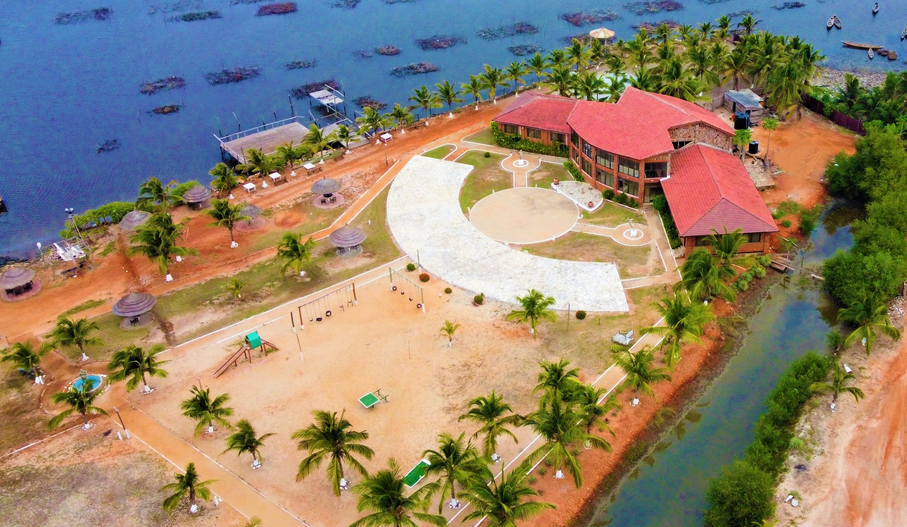

Bojo Beach
Bojo Beach est une plage située à Bortianor, à environ 30 km à l’ouest d’Accra. Elle se distingue par sa localisation unique entre la lagune du fleuve Densu et l’océan Atlantique, accessible par pirogue. Ouverte au public depuis 2013 avec le lancement du Bojo Beach Resort, elle offre un cadre naturel paisible, propre et bien aménagé. Très appréciée pour sa tranquillité en semaine et son ambiance festive le week-end, la plage propose diverses activités : baignade, sports, jet-ski, restauration, et hébergement sur place. C’est l’une des plages les plus propres et organisées de la région d’Accra..